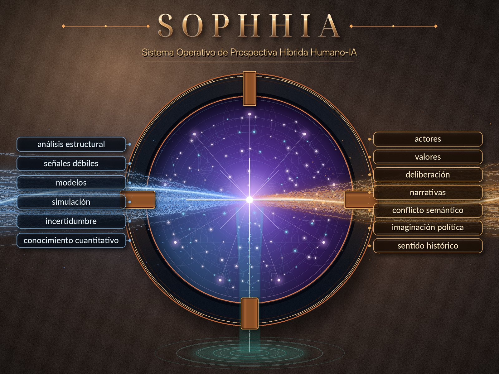
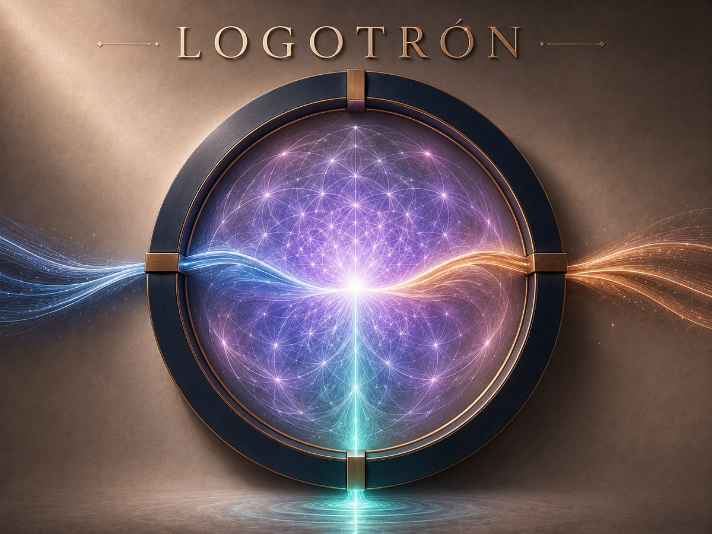
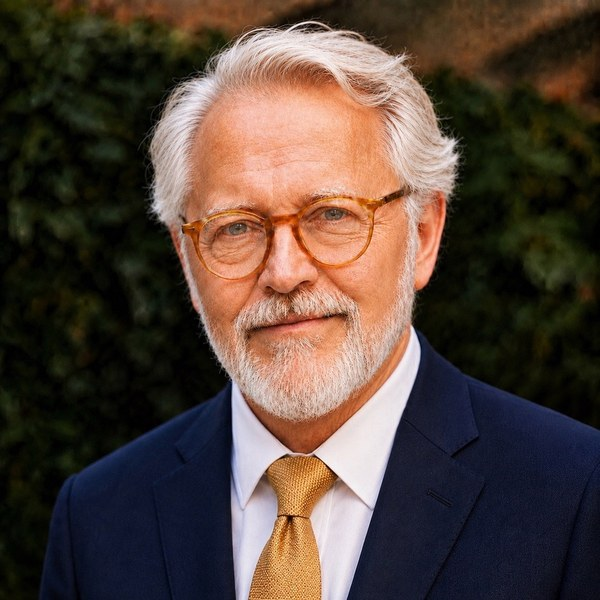

La prospectiva profesional deja de ser un privilegio de las grandes corporaciones. La IA la convierte en infraestructura accesible — sin renunciar al rigor.

El Colisionador: donde el cálculo y el relato chocan y se funden.
MICMAC, MACTOR, Forrester, escenarios morfológicos: técnicas que exigían paneles de expertos, semanas de matrices y un coste que solo grandes empresas, ministerios o think-tanks podían asumir.
Consultoras y paneles Delphi de decenas de miles de euros por estudio.
Semanas o meses para construir y procesar matrices estructurales a mano.
La pyme, el ayuntamiento mediano o el investigador quedaban fuera.
El LLM sintetiza, traduce y propone en segundos lo que antes requería un panel. El cálculo verificable resuelve matrices, equilibrios y simulaciones. Y el humano sigue donde siempre debió estar: en el juicio, los valores y la decisión.
La consecuencia es una democratización: lo que costaba decenas de miles de euros pasa a estar al alcance de una pyme, un municipio o un investigador — manteniendo el rigor metodológico intacto.
SOPHHIA no es un chatbot que opina sobre futuros. Es un simulador que se habita: un entorno donde se separa —y luego se une— el cálculo y el relato.
«No alucinamos. Calculamos.»
«No imponemos. Resonamos.»
El corazón del hemisferio narrativo. Si los modelos calculan qué puede pasar, el Logotrón construye el relato que ayuda a que pase. Registrado en la OEPM.

Un futuro bien narrado tiene más probabilidad de realizarse. El Logotrón opera esa fuerza con método: analiza, colisiona significados, genera relato y mide su resonancia — sin imponer, haciendo que las ideas resuenen.
SOPHHIA es un GPS aplicado a cualquier sistema —empresa, institución, persona o grupo— cuyo perfil cambia en el tiempo. Pero su salto decisivo está en lo que ocurre cuando el vehículo despega del plano.
Dice dónde está el sistema y dónde ha estado. El backcasting parte del futuro deseable y calcula la ruta hacia atrás.
Calcula el mejor camino hacia un destino fijo o móvil, sobre un territorio que se mueve por sí solo.
Detecta lo que entra en el espacio aéreo y dispara la alerta a tiempo: el cockpit de vigilancia, indicadores y señales débiles.
En 2D el vehículo está atado a las carreteras existentes: aunque calcule la ruta óptima, la condiciona una topología heredada. La eficiencia tiene un techo estructural.
Al activar el Modo 3D, el vehículo se levanta del plano: la ruta ya no es la mejor entre las disponibles, sino la línea más directa posible — una geodésica, no una carretera. El Modo 3D no optimiza dentro de la restricción: la elimina. Por eso el salto de eficiencia es exponencial, no lineal.
Del contrato prospectivo a la auditoría. El output de cada fase es el input de la siguiente, bajo dirección humana. Pasa el cursor o toca cada fase; los puntos STOP exigen validación humana explícita.
Selecciona una fase para ver su pregunta clave y sus herramientas.
Cada fase es un transformador: recibe un input, lo procesa y entrega un output que alimenta a la siguiente.
El output de cada fase es el input de la siguiente: un flujo continuo bajo dirección humana.
El tipo de sistema multi-actor y de horizonte largo donde la prospectiva siempre fue indispensable y costosísima. Dirección humana con criterio de sector; cálculo verificado.
en el backtesting sobre trayectorias y posiciones de actores predichas — auditado en 10 dimensiones.
La precisión global no es opinión: es un dato auditable. Cifras anonimizadas para difusión pública.
No son postulados teóricos: son regularidades emergidas de más de ocho casos reales validados con backtesting.
SOPHHIA se habita en tres niveles. Arriba, el criterio humano en estado puro; abajo, la metodología hecha plataforma accesible. Cada uno alimenta al siguiente.
1 · La cúspide. Para el directivo que quiere dirigir con el sistema en sus propias manos — y verlo antes que su equipo.
Acompañamiento personal y exclusivo para directivos que no delegan el entender: aprenden a pilotar SOPHHIA para anticipar el terreno de sus decisiones antes que nadie en su organización. Plazas deliberadamente limitadas.

2 · El cuerpo · 3 · La base. Para quien quiere el resultado en su mesa, y para quien quiere la herramienta que escala.
Documentos de divulgación que muestran cómo el método SOPHHIA se aplica a dominios concretos. Lectura abierta.
Cómo anticipar el futuro de un territorio con método — y decidir hoy con esos escenarios delante.
Leer el white paper →Anticipación, mapa de fuerzas y teoría de juegos para llegar a la mesa preparado — no confiado.
Leer el white paper →Cuéntanos qué sistema quieres anticipar. Respondemos a cada solicitud personalmente.
¿Ya tienes una decisión concreta entre manos? Empieza por el Contrato Prospectivo — la primera fase del método, en forma de cuestionario.
También puedes escribir a contacto@sophhia.com
Hemos recibido tu solicitud. Te responderemos personalmente en breve.